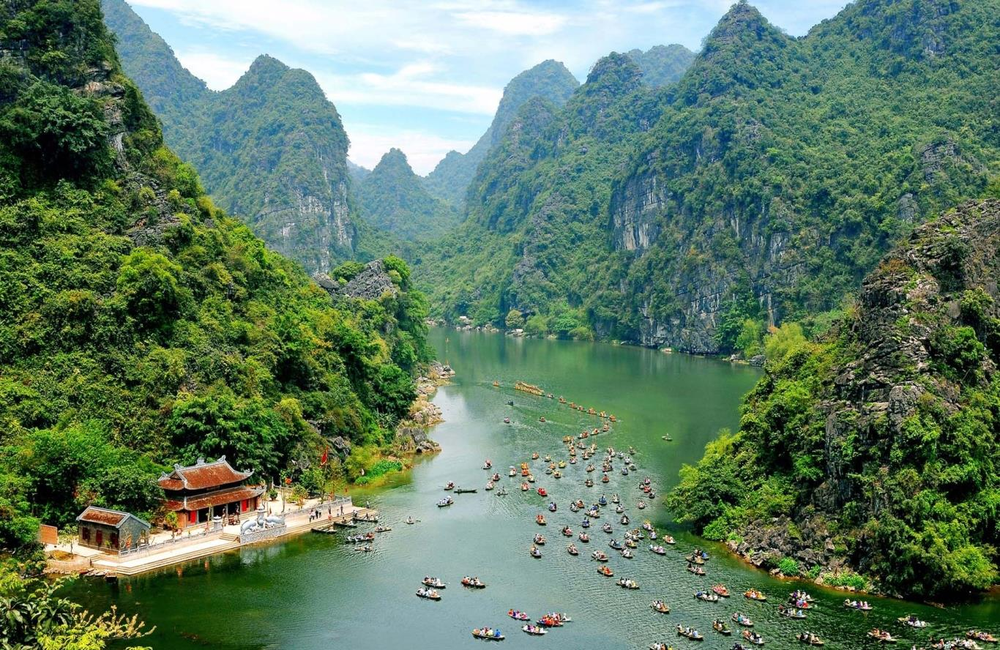
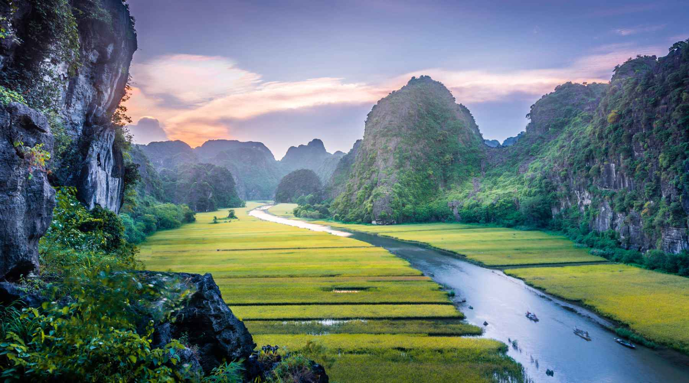
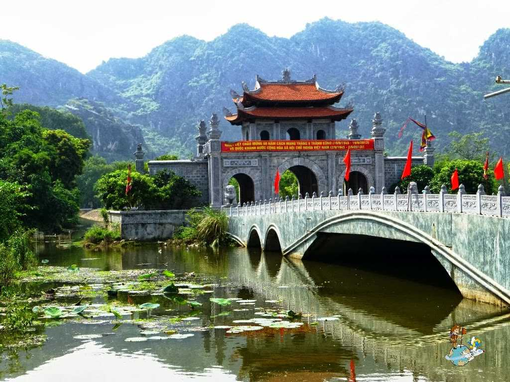
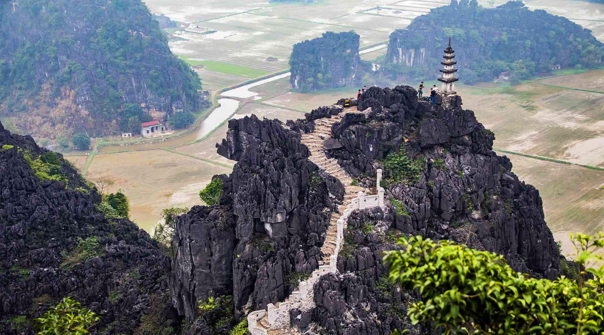
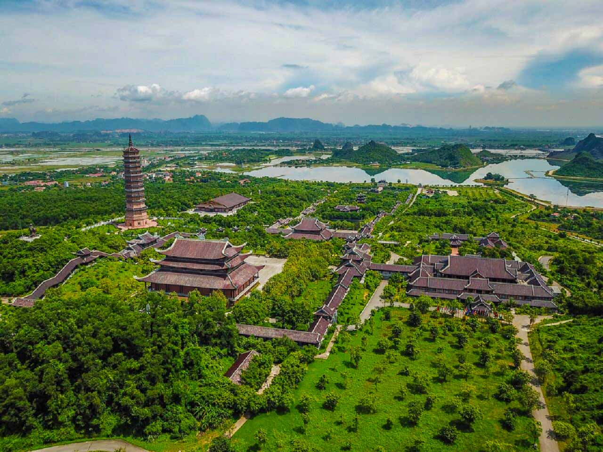

Những thắng cảnh đẹp ở Ninh Bình
1. Quần thể danh thắng Tràng An

Tràng An là một trong những khu du lịch nổi tiếng nhất của Ninh Bình hiện nay. Phong cảnh
thiên nhiên hoang sơ, tuyệt đẹp của Tràng An đã được UNESCO công nhận là di sản thiên nhiên
và di sản văn hóa thế giới. Khung cảnh nơi đây được tạo nên từ dòng sông chạy uốn lượn qua
các dãy núi đá vôi, tạo thành vô vàn những hang động tự nhiên huyền ảo, kỳ bí. Để khám phá
Tràng An, du khách sẽ được ngồi trên thuyền ngắm cảnh thiên nhiên núi non xung quanh.
2. Tam Cốc-Bích Động

Nằm ở xã Ninh Hải, huyện Hoa Lư, Tam Cốc – Bích Động là một điểm đến quen thuộc
mà du khách chắc chắn không thể bỏ qua khi đặt chân tới Ninh Bình. Tham quan Tam
Cốc, bạn sẽ được ngồi trên thuyền, xuôi theo dòng sông Ngô Đồng thơ mộng ngắm
nhìn những dãy núi trùng điệp và những cánh đồng lúa chín vàng óng ánh. Khung cảnh
nên thơ ở đây chắc chắn sẽ làm say lòng bất cứ du khách nào.
3. Cố đô Hoa Lư

Cố đô Hoa Lư nằm trên địa phận xã Trường Yên, huyện Hoa Lư, là quần thể di tích
quốc gia đặc biệt quan trọng của Việt Nam. Khu di tích này bao gồm đền vua Đinh, đền
vua Lê và nhiều công trình hạng mục khác. Hiện nay cố đô Hoa Lư là điểm đến yêu
thích của nhiều du khách, nhất là những người muốn được tìm hiểu về lịch sử cũng
như đi lễ cầu may.
4. Hang Múa

Hang Múa nằm dưới chân núi Múa, là một địa điểm du lịch thuộc quần thể du lịch của
thôn Khê Đầu Hạ, xã Ninh Xuân. Mặc dù không nổi tiếng như nhiều danh thắng khác ở
Ninh Bình, thế nhưng hang Múa lại chiếm được rất nhiều tình cảm của du khách bởi
cảnh sắc thiên nhiên tuyệt đẹp cũng như không gian ở đây không chen lấn, xô bồ như
những địa điểm nổi tiếng khác. Từ dưới chân núi có thể thấy rõ những bậc thang nối
dài lên đỉnh núi trông như Vạn Lý Trường Thành thu nhỏ. Lên tới đỉnh núi Múa, bạn sẽ
được ngắm nhìn quang cảnh của những cánh đồng lúa chín như được thu nhỏ vào tầm mắt,
những chiếc thuyền xuôi mái chèo thấp thoáng trên dòng nước.
5. Chùa Bái Đính

Nằm cách thành phố Ninh Bình 15km, chùa Bái Đính là một khu chùa có quy mô lớn
nhất Việt Nam với nhiều kỉ lục đã được xác lập như Đại hồng chung lớn nhất Việt Nam;
sở hữu pho tượng Phật bằng đồng cao và nặng nhất Việt Nam; là ngôi chùa có bộ tượng
tam thế lớn nhất Việt Nam; ngôi chùa có giếng lớn nhất Việt Nam cũng như có nhiều tượng
la hán bằng đá nhất Việt Nam.